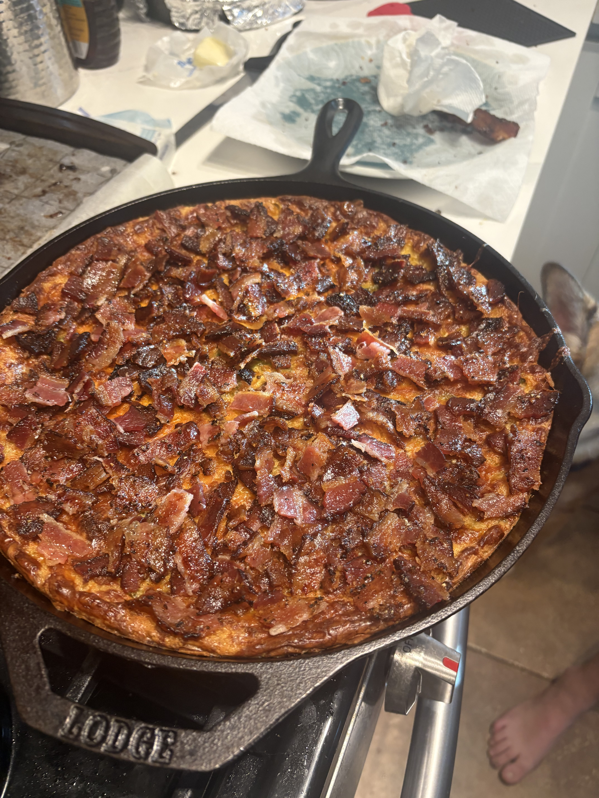
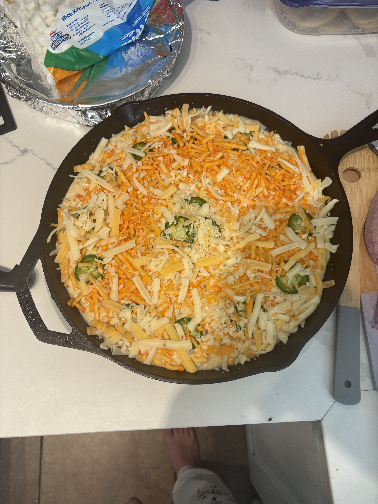

Bacon Jalapeno Corn Bread Pudding


Comfort food but even cozier. This corn bread pudding is spicy, sweet, salty, and dangerous... I could eat the
entire skillet!
Ingredients
- 1 box Jiffy Corn Muffin Mix (8.5 oz)
- 1 stick (½ cup / 4 oz) salted butter, melted
- 2 large eggs
- 1 can (15 oz) whole kernel corn, drained
- 1 can (15 oz) cream-style sweet corn
- 1 cup full-fat sour cream (or full-fat Greek yogurt)
- 2 tbsp of hot honey
- 1 lb bacon, cooked until crisp and crumbled (reserve some for topping)
- 2 fresh jalapeños, seeded and finely diced
- 1 can mild green chiles (4 oz)
- 1½ to 2 cups shredded pepper jack cheese (reserve some for topping)
- salt
- pepper
Instructions
- Preheat oven to 350°F. Grease a 9x13-inch baking dish with butter or nonstick spray.
- In a large bowl, whisk together the eggs, sour cream, melted butter, and 1–2 tbsp hot honey until smooth.
- Whisk in both the whole corn and the cream-style corn until evenly combined.
- Stir in the crumbled bacon (save a little for topping), diced jalapeños, green chiles, and shredded pepper
jack. Season with salt and black pepper.
- Gently fold in the corn muffin mix just until incorporated.
- Pour the mixture into the greased dish. Top with a light handful of extra pepper jack and a few slices of
fresh jalapeño if you want it to look pretty.
- Bake for 60 to 70 minutes, covering loosely with foil halfway through to prevent burning. The cheese makes
it a little harder to tell when it’s done, but you’re looking for:
- a lightly golden top
- edges set
- a slight wobble in the center (custardy, not loose)
- Sprinkle with flakey salt and let it rest for 10 to 15 minutes so it sets into that perfect custardy
texture.
- Finish with chives, a little hot honey, and extra bacon. Serve warm and enjoy.